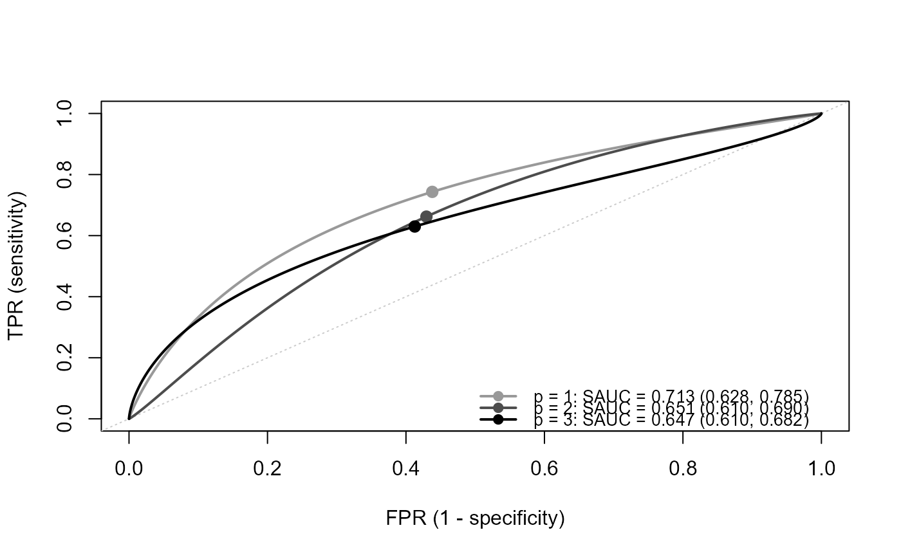

This function estimates the time-dependent SROC curve and SAUC in meta-analysis of prognostic studies, without considering publication bias. At each time point, the time-dependent sensitivity and specificity are reconstructed from the published survival probabilities of the test-positive and test-negative groups (Combescure et al., 2016), and the bivariate random-effects model of the logit-transformed sensitivity and specificity (with the within-study covariance) is fitted by the maximum likelihood method.
Usage
tsroc(
time.points,
study.os,
time.os,
n1.os,
n0.os,
s1.os,
s0.os,
data.os = NULL,
study.lnhr,
lnhr,
var.lnHR,
data.lnhr = NULL,
time.med,
n1.med,
n0.med,
s1.med,
s0.med,
data.mct = NULL,
ci.level = 0.95,
parallel.ncores = 1L,
parset = list()
)Arguments
- time.points
A numeric vector of the time points at which the time-dependent SROC curve is estimated. Each value should be included in
time.os.- study.os
Specify the column of the study ID (numeric) in
data.os.- time.os
Specify the column of the time at which the survival probabilities are reported. The unit of time should be the same as
time.pointsandtime.med.- n1.os
Specify the column of the number of subjects in the test-positive group (group 1).
- n0.os
Specify the column of the number of subjects in the test-negative group (group 0).
- s1.os
Specify the column of the survival probability at
time.osin group 1.- s0.os
Specify the column of the survival probability at
time.osin group 0.- data.os
A data frame of the survival data, with one row for each study and each time point. Within each study, the rows should be sorted in ascending order of time. If
data.os = NULL(default),study.os,time.os,n1.os,n0.os,s1.os, ands0.osare evaluated in the calling environment.- study.lnhr
Specify the column of the study ID (numeric) in
data.lnhr, which corresponds tostudy.os.- lnhr
Specify the column of lnHR (group 1 versus group 0).
- var.lnHR
Specify the column of the variance of lnHR.
- data.lnhr
A data frame of lnHR, with one row for each study. If
data.lnhr = NULL(default),study.lnhr,lnhr, andvar.lnHRare evaluated in the calling environment.- time.med
Specify the column of the median follow-up time.
- n1.med
Specify the column of the number of subjects in group 1.
- n0.med
Specify the column of the number of subjects in group 0.
- s1.med
Specify the column of the survival probability at
time.medin group 1.- s0.med
Specify the column of the survival probability at
time.medin group 0.- data.mct
A data frame of the median follow-up time, with one row for each study reporting it. It is used to estimate the censoring distribution common to all the studies (see details in
tsrocsa.lrt). Ifdata.mct = NULL(default),time.med,n1.med,n0.med,s1.med, ands0.medare evaluated in the calling environment.- ci.level
The confidence level of the confidence intervals, within (0, 1). The default is 0.95.
- parallel.ncores
The number of cores used for the parallel computation over
time.points(PSOCK cluster of the package parallel). The default is1L(no parallel computation).- parset
A list of the settings for the estimation, which updates the default settings. Bad initial values and bounds may cause non-convergence.
inital.values: The initial values ofc(mu1, mu2, tau1, tau2, rho). If it is not a vector of length 5 (default), the estimates bymixmetaare used.mu.bound: \(\mu_1\) and \(\mu_2\) are searched within[-mu.bound, mu.bound]. The default is 5.tau.bound: \(\tau_1\) and \(\tau_2\) are searched within[eps, tau.bound]. The default is 5.eps: The lower bound of \(\tau_1\) and \(\tau_2\). The default is1e-5.
Value
An object of class "srocsa":
a list with one element for each time point (named by time.points).
Each element is the same as the output of sroc.
The results can be shown by print.srocsa, summary.srocsa, and plot.srocsa.
Details
The time-dependent sensitivity and specificity, and their within-study variances and covariance
are calculated in the same way as tsrocsa.lrt.
study.lnhr, lnhr, and var.lnHR are required as input,
but lnHR is not used in the estimation of this function.
References
Combescure C, Daures JP, Foucher Y (2016). A literature-based approach to evaluate the predictive capacity of a marker using time-dependent summary receiver operating characteristics. Statistical Methods in Medical Research, 25(2), 674–685. doi:10.1177/0962280212464542
Examples
## load data
data(Ki67)
Ki67_OS <- Ki67$OS
Ki67_HR <- Ki67$HR
Ki67_MCT <- Ki67$MT
## lnHR and its variance from HR and its 95 percent CI
Ki67_HR$lnHR <- log(Ki67_HR$HR)
Ki67_HR$v.lnHR <- ((log(Ki67_HR$ci.up) - log(Ki67_HR$ci.low)) / (2 * qnorm(0.975)))^2
fit <- tsroc(
time.points = c(24, 36, 60),
study.os = study, time.os = t, n1.os = n1, n0.os = n0, s1.os = s1, s0.os = s0,
data.os = Ki67_OS,
study.lnhr = study, lnhr = lnHR, var.lnHR = v.lnHR, data.lnhr = Ki67_HR,
time.med = mct_mo, n1.med = n1, n0.med = n0, s1.med = s1_mct, s0.med = s0_mct,
data.mct = Ki67_MCT
)
fit
#> ==================================================
#> Model optimization
#>
#> Number of studies : 23
#> time : 24
#> Optimizer : 1
#>
#> * 1 indicates converged
#> ==================================================
#>
#> SAUC Estimates
#> -------------------------------------------
#> Marginal p SAUC SE CI.low CI.up
#> -------------------------------------------
#> p = 1 0.713 0.040 0.628 0.785
#>
#> ==================================================
#>
#> Parameter Estimates (SE)
#> ----------------------------------------------------------------------------------------------------------
#> Marginal p mu_se mu_sp tau_se tau_sp rho beta alpha
#> ----------------------------------------------------------------------------------------------------------
#> p = 1 1.063 (0.234) 0.249 (0.116) 0.911 (0.198) 0.520 (0.096) -0.515 (0.259) - -
#>
#> ==================================================
#> Model optimization
#>
#> Number of studies : 23
#> time : 36
#> Optimizer : 1
#>
#> * 1 indicates converged
#> ==================================================
#>
#> SAUC Estimates
#> -------------------------------------------
#> Marginal p SAUC SE CI.low CI.up
#> -------------------------------------------
#> p = 1 0.651 0.020 0.610 0.690
#>
#> ==================================================
#>
#> Parameter Estimates (SE)
#> ----------------------------------------------------------------------------------------------------------
#> Marginal p mu_se mu_sp tau_se tau_sp rho beta alpha
#> ----------------------------------------------------------------------------------------------------------
#> p = 1 0.673 (0.185) 0.284 (0.115) 0.656 (0.209) 0.512 (0.095) -0.877 (0.161) - -
#>
#> ==================================================
#> Model optimization
#>
#> Number of studies : 21
#> time : 60
#> Optimizer : 1
#>
#> * 1 indicates converged
#> ==================================================
#>
#> SAUC Estimates
#> -------------------------------------------
#> Marginal p SAUC SE CI.low CI.up
#> -------------------------------------------
#> p = 1 0.647 0.018 0.610 0.682
#>
#> ==================================================
#>
#> Parameter Estimates (SE)
#> ----------------------------------------------------------------------------------------------------------
#> Marginal p mu_se mu_sp tau_se tau_sp rho beta alpha
#> ----------------------------------------------------------------------------------------------------------
#> p = 1 0.532 (0.133) 0.353 (0.135) 0.430 (0.153) 0.577 (0.110) -0.928 (0.124) - -
#>
plot(fit)
#> Warning: The values of p are not found; the curves are numbered instead.
